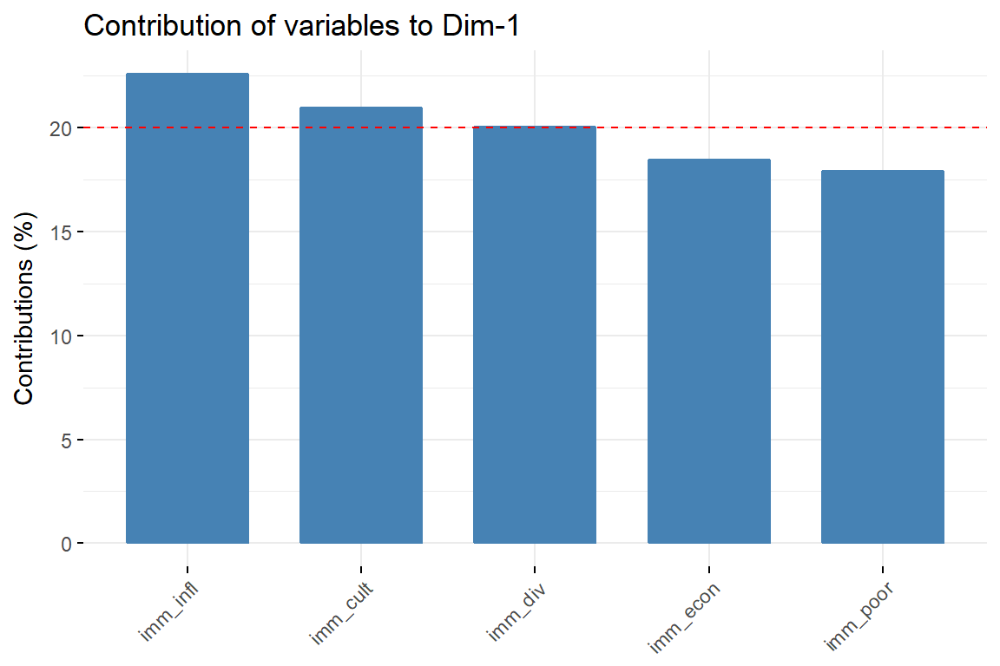

9 Eigenvalues/ Eigenvectors
Eigen = “latent” or characteristic
- \(x\) eigenvector
- \(\lambda\) einevalue
\[Ax = \lambda x\]
- PCA: unsupervised
- t-SNE: Supervised
9.1 k-Means Clustering
Kmeans is one of the most popular and simple algorithm to discover underlying structures in your data. The goal of kmeans is simple, split your data in k different groups represented by their mean. The mean of each group is assumed to be a good summary of each observation of this cluster.
Different type of clustering algorithms exist such a k-means, k-medoids, hierarchical clustering …
Basically, this equation means that we are looking for the k centers which will minimize the distance between them and the points of their cluster. This is an optimization problem, but since the function, we want to minimize is not convex and some variables are binary, it cannot be solved in classic ways with gradient descent. The usual way to solve it is the following:
- Initialize randomly the centers by selecting k-observations
- While some convergence criterion is not met
- Assign each observation to its closest center
- Update each center. The new centers are the mean of the observation of each group.
- Update the convergence criterion.
set.seed(1)
library(tidyr)
imm_dat <- ess_work %>%
drop_na(contains("imm")) # only drops sepecial NA
imm_k <- imm_dat %>%
select(contains("imm")) %>%
#scale() %>%
kmeans(., 2)
library(ggfortify)
autoplot(imm_k, data = imm_dat, alpha = .1, colour = 'pc') +
facet_wrap(~country)autoplot(imm_k, data = imm_dat, frame = T)autoplot(imm_k, data = imm_dat, frame = T, frame.type = 'norm')set.seed(2017)
dat <- imm_dat %>%
select(country, contains("imm"))
performance <- c()
for (jj in 1:30) {
clust <- kmeans(dat[,-1], centers = jj)
performance <- c(performance, 1 - clust$tot.withinss / clust$totss)
}
data.frame(
metrics = performance,
ncenter = 1:30
) %>%
ggplot(aes(x = ncenter, y = metrics)) +
geom_point(alpha=0.2) +
geom_line() +
geom_vline(xintercept = 3, color='red')library(purrr)
res <- purrr::map(1:6, ~ kmeans(dat[,-1], .))
autoplot(res, data = imm_dat, ncol = 3) + theme(legend.position = "none")9.2 PCA
- http://rpubs.com/sinhrks/plot_pca
- http://enhancedatascience.com/2017/07/31/machine-learning-explained-dimensionality-reduction/
- pca fitting process
- Very extensive round about
library("factoextra")
imm_dat1 <- ess_work %>%
filter(country == "DE") %>%
select(contains("imm")) %>%
na.omit
imm_pca1 <- imm_dat1 %>%
scale() %>%
prcomp(2)
#eig.val <- get_eigenvalue(imm_pca)
#var <- get_pca_var(imm_pca)
fviz_eig(imm_pca1, addlabels = TRUE, ylim = c(0, 80))fviz_pca_var(imm_pca1, col.var = "black")# Total cos2 of variables on Dim.1 and Dim.2
fviz_cos2(imm_pca1, choice = "var", axes = 1:2)# Color by cos2 values: quality on the factor map
fviz_pca_var(imm_pca1, col.var = "cos2",
gradient.cols = c("#00AFBB", "#E7B800", "#FC4E07"),
repel = TRUE # Avoid text overlapping
)# Contributions of variables to PC1
fviz_contrib(imm_pca1, choice = "var", axes = 1, top = 10)
# Contributions of variables to PC2
fviz_contrib(imm_pca1, choice = "var", axes = 2, top = 10)# The total contribution to PC1 and PC2 is obtained with
fviz_contrib(imm_pca1, choice = "var", axes = 1:2, top = 10)library(ggfortify)
autoplot(imm_pca1, data = imm_dat1, loadings = TRUE, alpha = .1)+
viridis::scale_colour_viridis(discrete = T)9.3 Exploratory Factor Analysis
imm_efa <- imm_dat1 %>%
factanal(.,factors = 2, scores = 'regression')
autoplot(imm_efa, data = imm_dat1, alpha = .1, loadings = T) + viridis::scale_colour_viridis(discrete = T)